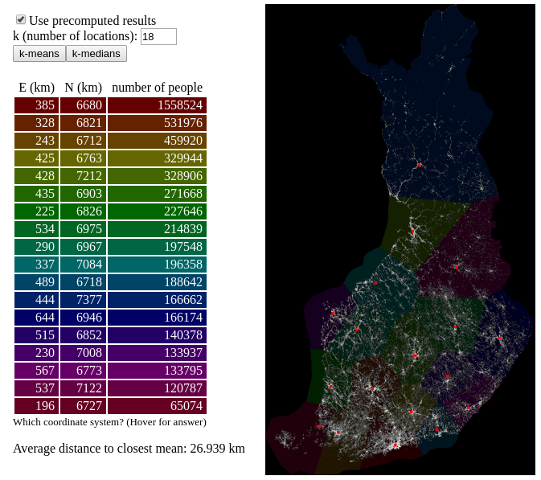

Maps are a familiar way of visualizing data to many people. Thus adding location to the data points has potential to make complex data better understandable. Moreover, knowledge of spatial relationships might reveal linkages that are not obvious from tables or bar charts.
For companies and public organizations it is important to place their business right. You want you office or restaurant to be where the people are or where it is easy for them to get to.
In our miniproject we visualized population and public transport stops on a map. Then weighted K-means algorithm was used to find population centers or transport hubs that could be optimal locations to place business units.
After finding suitable coordinates we took open data about buildings and searched the buildings that are closest and have right purpose of usage.
To get ourselves acquainted with kmeans clustering we did many kinds of visualizations and tries with k-means algorithm. One them was clustering the whole population of Finland to n number clusters. You can try the app here: https://where-to-place.herokuapp.com
Be patient, though, especially large number clusters might take some time to execute.
Here is an example of 18 clusters.

For many problems it is enough to have a good visualization. Thus we first drew population, bus stops, road and municipality bounds on to map.
There's a great interface from open street map data to python that makes it really easy to access geo-data like roads.
Our starting point was 1 km by 1 km data set from Statistics Finland that includes total population and population by 3 agegroups as variables. We chose the version where coordinates depict the center of each square. Municipality border polygons or statistical classification of municipalities were also Statiscs Finland's open data.
We got the data about bus stops from open street map interface but we used also HSL's open data collection.
Our third main data set were the buildings of Helsinki, Espoo and Vantaa. These sets turned out to be utter nightmare. Eventhough there exists a 3-level official classification about the purpose of use of a building there three cities had managed to code it differently. Statistics Finland offered a list of codes that had to be parsed to unify the codes. Moreover the column names in the datasets were unnecessarily long and Vantaa had even used Scandinavian characters. So if our data wrangling quota for this exercise was not full after handling the building data it was.
There's plenty of open data available but many interesting sets report things by municipality which is not so interesting with this kind of application. Statistics Finland has published an interesting data where zip code is the unit and variables include for example income. But this level was a little too abstract for us as well.
Our main tools included python 3, clojure and java. HTML- and CSS-were obviously used to create this blog.